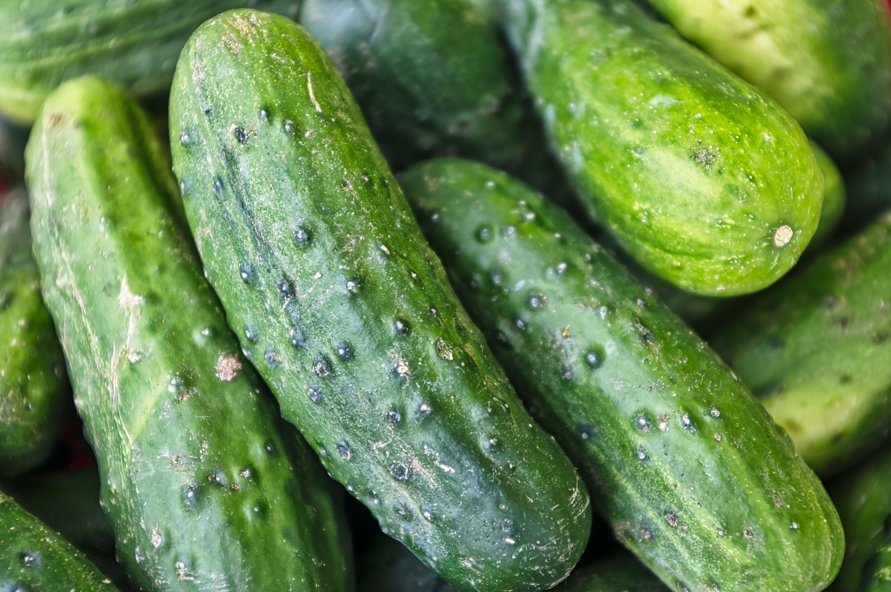

About Cucumber
Cucumber is a refreshing and versatile vegetable known for its mild flavor and high water content. It is a popular addition to salads, sandwiches, and pickles. Growing cucumbers in your garden is relatively easy, and with the right care, you can enjoy a steady supply of crisp and delicious cucumbers throughout the growing season.
Steps to Grow Cucumber
- Choose a sunny location with well-drained soil for planting cucumber.
- Start cucumber seeds indoors or directly sow them in the garden after the last frost.
- Provide support for vining cucumber varieties by using trellises or cages.
- Water cucumber plants consistently, keeping the soil consistently moist but not waterlogged.
- Fertilize with a balanced fertilizer suitable for vegetables according to the recommended schedule.
- Harvest cucumbers when they reach the desired size and are firm to the touch.
- Regular harvesting encourages continuous production of cucumbers.
Extra Information
Cucumbers are low in calories and high in vitamins and minerals, making them a healthy addition to your diet. There are different cucumber varieties, including slicing cucumbers and pickling cucumbers. Be mindful of cucumber pests, such as cucumber beetles, and take preventive measures to protect your plants. Enjoy the versatility of cucumbers in salads, sandwiches, and as a refreshing snack.